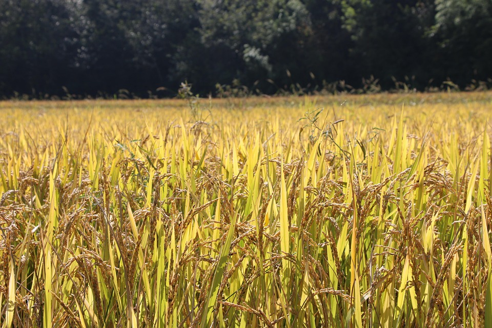
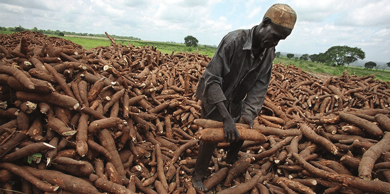

Explore Our Crops
We support local farmers by sharing information, practices, and updates on the most vital crops in Tanzania.
Maize (Mahindi)
.jpg)
Maize is a staple crop for millions in Tanzania. It's grown in nearly all regions, particularly in Mbeya, Iringa, and Ruvuma.
We provide guidance on optimal planting seasons, pest control, and improved seed varieties to increase yield.
Rice (Mpunga)

Rice farming is common in Mwanza, Morogoro, and Shinyanga. We educate farmers on water-efficient systems like SRI (System of Rice Intensification),
fertilizer application, and post-harvest handling for better market value.
Cassava (Muhogo)

Cassava is drought-tolerant and vital for food security. GreenHarvest shares insights into improved disease-resistant varieties,
value addition through flour production, and income-generating uses of cassava leaves.
Tomatoes (Nyanya)

Tomatoes are high-demand cash crops in urban markets. We help farmers tackle pests like Tuta absoluta, improve greenhouse farming,
and connect with reliable buyers for better prices.